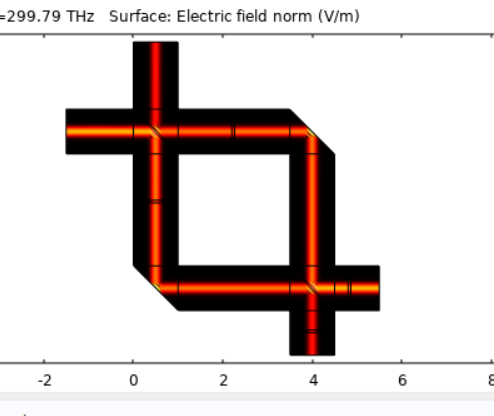
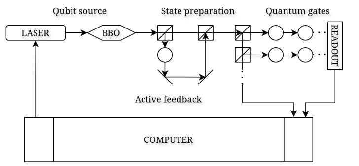
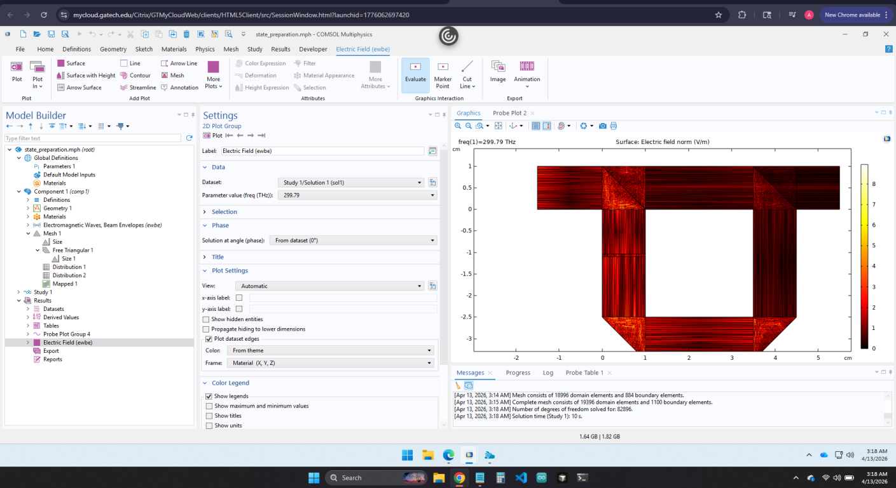
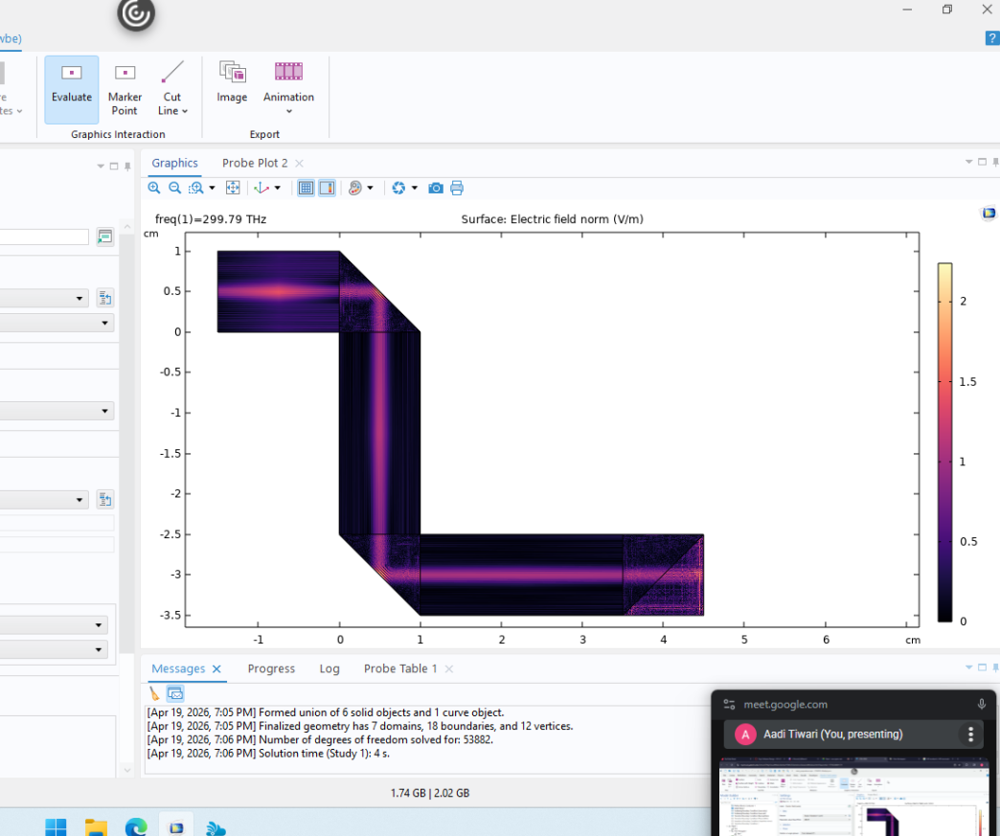
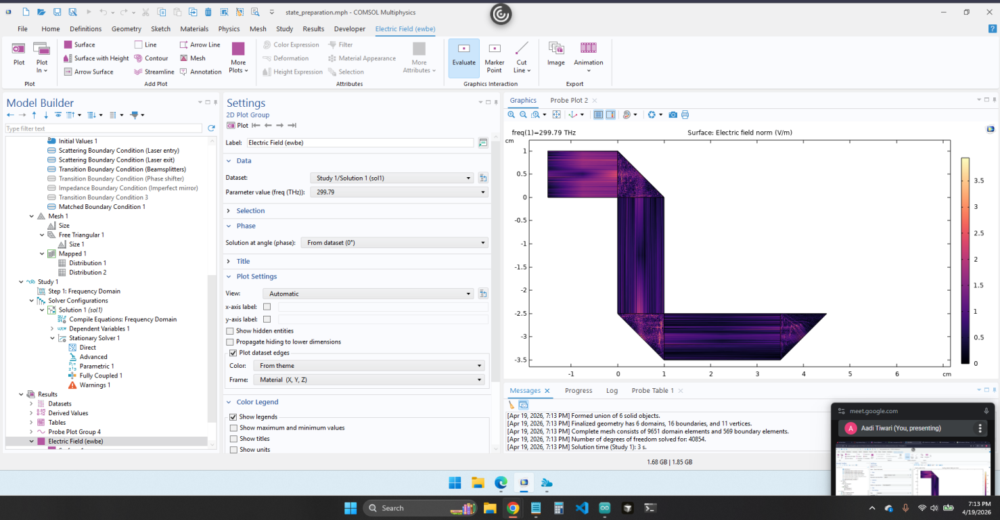
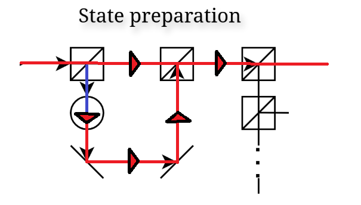
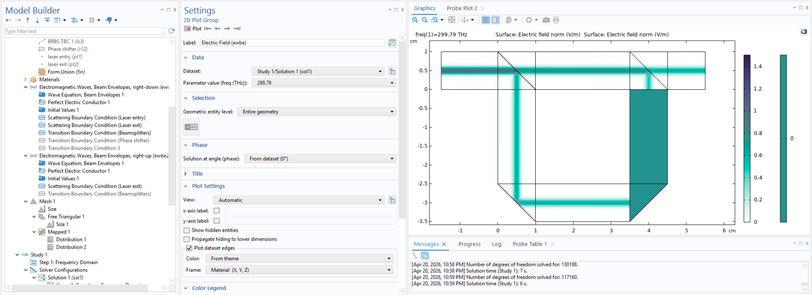

This semester, the quantum computing association has begun a new project in assembling a linear optical quantum computer on our own. The goal is to give students a chance to engage in the assembly of the computer, something usually reserved for graduate students and difficult to otherwise gain experience in. We received a $10,000 grant from GTSF to buy the components we need, but now the question is: what are the bare minimum specifications of laser light intensity used in our computer for everything to work?
When light travels through a medium, there is a natural loss in intensity as small amounts scatter. The loss can become larger in specialized optical components, like our beamsplitters or mirrors. We are also constrained by the fact that we do not want to use a class 4 laser, as this would induce extra safety requirements, so we need to find the weakest laser under 500 mW of power (intensity = power/area of beam surface area) that will propagate through our system without losing too much intensity.
Found open model online for Mach-Zehnder interferometer. This contains the same components as our LOQC state preparation: laser source, beamsplitter, mirror, phase shifter.

My idea is to rearrange the coordinates of the mirrors and beamsplitters to make it like our state prep section.

Then we ran into this noisy structure, which obviously makes no physical sense.

Trying to debug this noise took a very long time, as I had no idea what was so unphysical about the system. I double checked the mesh. I tried replacing the PEC boundary conditions with impedance. I tried slowly transforming the original working MZI into my setup to figure out where things were going wrong, and I realized the issue was definitely with the mirrors.

One mirror seems to work well enough when it points up and down, but two mirrors do not work when they reflect onto each other left to right.

I was convinced there had to be some infinite reflection loop that leads to such ridiculous results, but that does not make sense as there is no infinite loop, even though the mirrors point to each other. Finally, after doing more research, I realized why this issue was occurring.
For context, there are three ways to do optical simulations in COMSOL: Ray Optics, Beam Envelopes, and Frequency Domain. Ray Optics is the least computationally expensive, but it does not account for interference, which is crucial in quantum computation. Frequency Domain is a brute force solver which requires every mesh element to be a quarter of the size of the wavelength of your light beam, which means nanometer mesh elements and is infeasible for a large-scale build.
Beam Envelopes has the physical complexity Ray Optics lacks without the computational expense of Frequency Domain, and it achieves this by using a cancellation trick in its calculation, the beam envelope method. The only constraint is that for the beam envelope method to work, you need to define two wave vectors, and only two, in which the light you are solving for is propagating. We have three: rightwards, downwards, but most importantly upwards when we have the bottom-right mirror.

That is why removing that bottom-right mirror fixed issues: it introduced a whole new direction for light to propagate in. My new idea was to split the model into two domains: one where light travels right-down, and one where light travels right-up. After doing this, you can see there is no more noise.

However, there is also no light going down the right-down area. This is because the light is not automatically transferred from one beam envelope domain to a separate beam envelope domain. This is the state of my progress with this project so far. My current goal is to analytically calculate the expression of the light at those two points and use those as a source for the second domain, connecting everything.
Thank you!
Optoelectronic multiphysics simulations, design optimization, patience.